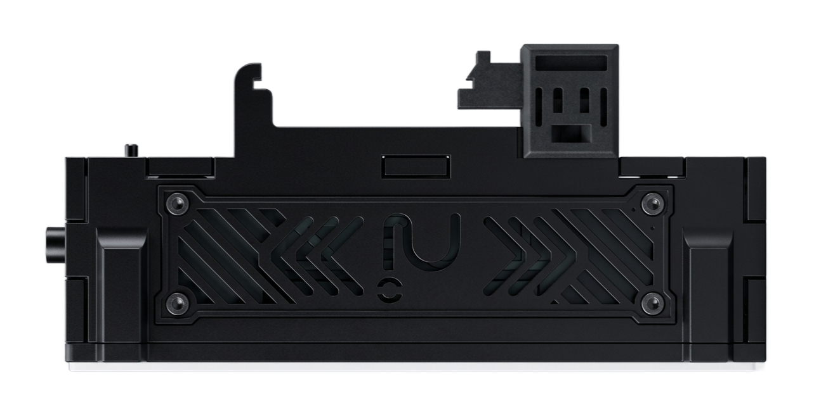
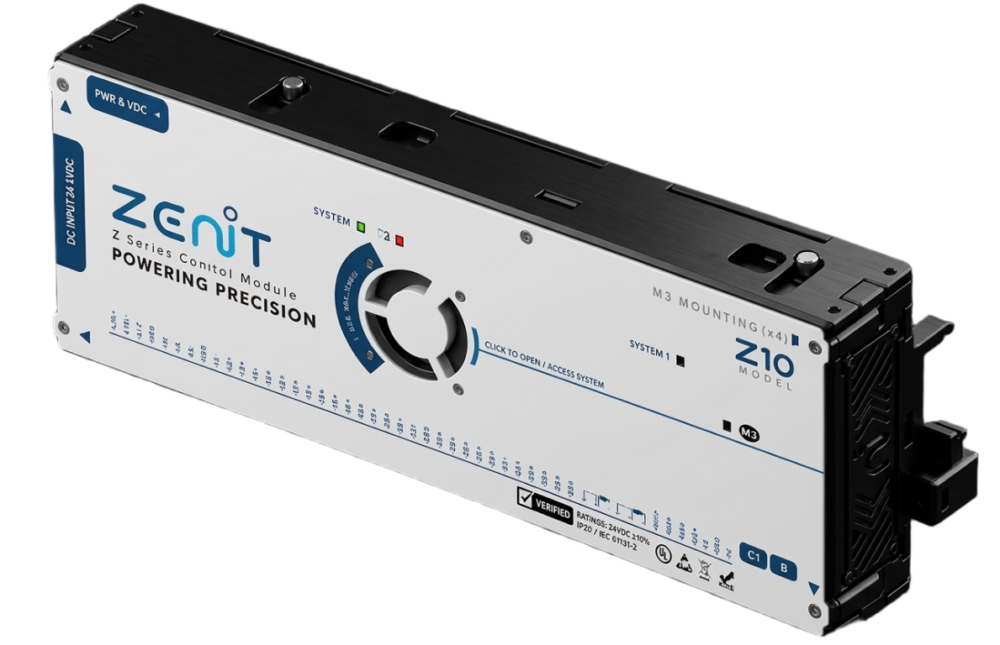
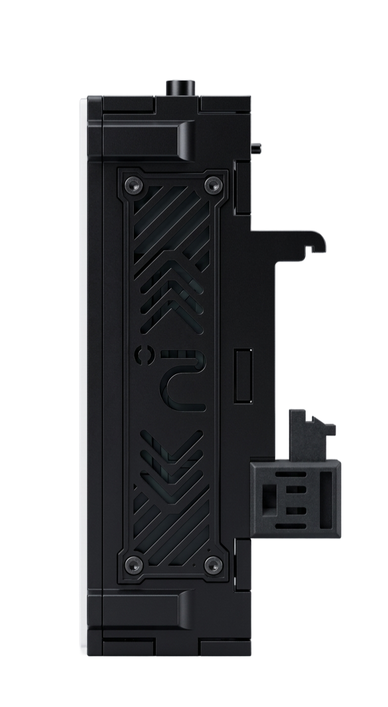
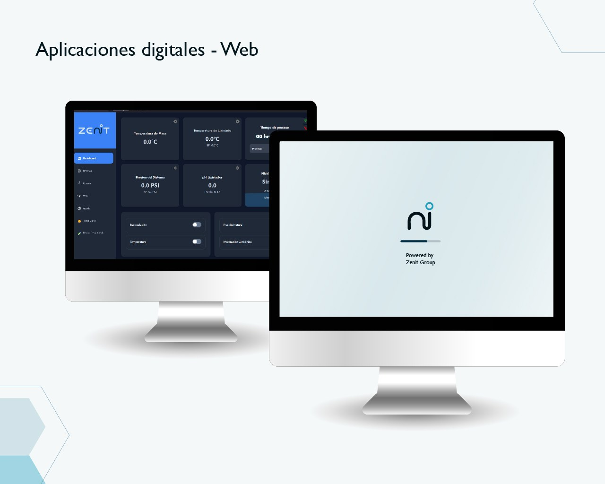
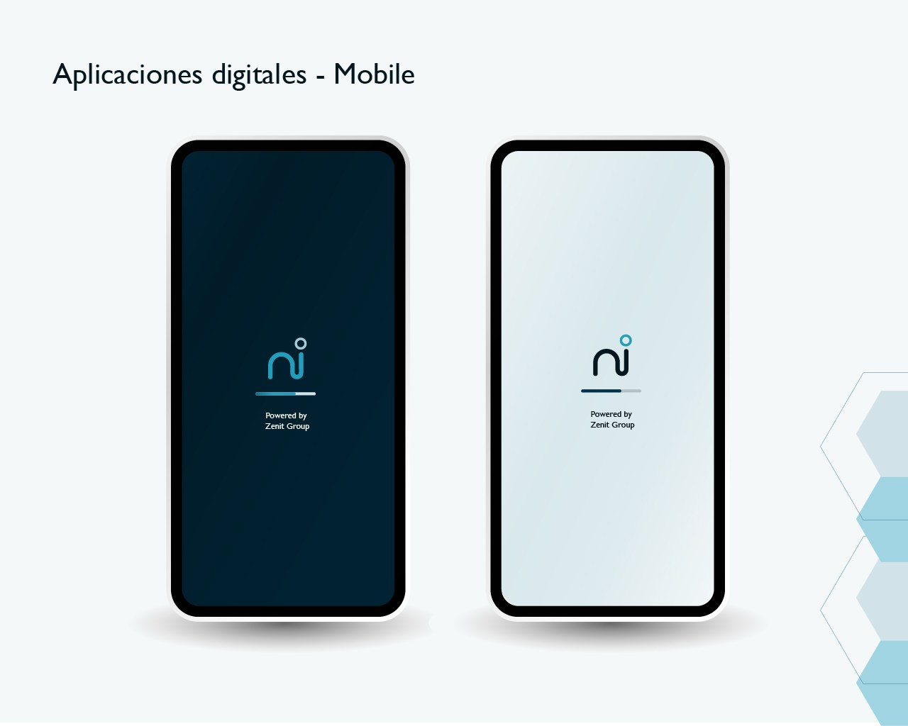

Supervisión y control
Lee variables del proceso y coordina secuencias de trabajo para diferentes máquinas y equipos.
Integramos sensores, relés y aplicaciones web o móviles para supervisar procesos, guardar datos y actuar sobre la maquinaria.

Una solución que se adapta a cada proceso.Una integración pensada alrededor de la operación.
Supervisa señales y coordina acciones en el proceso.
Conectamos señales de campo, automatización y software para que cada máquina responda a las necesidades de su operación. La información puede conservarse localmente, consultarse en una interfaz conectada por Wi‑Fi o sincronizarse con servicios en línea.
Lee variables del proceso y coordina secuencias de trabajo para diferentes máquinas y equipos.
Guarda información operativa en el equipo y, cuando la aplicación lo requiere, facilita su consulta desde la nube.
Interfaces web o móviles para revisar y controlar procesos por Wi‑Fi, de forma local o en línea según la configuración.
Las salidas por relé pueden comandar contactores para accionar motores, bombas, válvulas y compuertas, según la etapa de potencia requerida.
Un mismo sistema puede acompañar distintos equipos y etapas de operación. La integración se define según las señales, el control y la información que necesita cada proceso.


Integramos instrumentos de campo para supervisar variables y alimentar el control. La compatibilidad se confirma según el sensor y cada proceso.
Comunicamos con sensores compatibles por RS‑485. El protocolo y el equipo se validan de acuerdo con cada aplicación.
Integramos equipos por RS‑485, señales industriales de 4–20 mA y medición de temperatura con Pt100 o termocuplas.
Consultar compatibilidad de un sensorIntegramos equipos y sensores compatibles con RS‑485; se valida cada modelo y la información requerida.
La compatibilidad depende de la señal, el sensor y las condiciones de cada instalación.
Desarrollamos interfaces web y móviles para consultar variables, revisar el estado de la operación y enviar acciones de control. La conexión puede ser local por Wi‑Fi o en línea, de acuerdo con la arquitectura de cada proyecto.


Aplicaciones digitales desarrolladas por Zenit Group.
Adaptamos la integración a la maquinaria, las señales disponibles y el tipo de supervisión que necesita cada operación.
Zenit Group transforma la complejidad industrial en soluciones inteligentes y accesibles, enfocadas en impulsar la eficiencia, la productividad y la sostenibilidad de las operaciones.
Democratizar la automatización industrial de clase mundial.
Contribuir a un ecosistema industrial autónomo, interoperable y resiliente.
Cuéntanos en qué consiste tu operación y coordinaremos una conversación para revisar su alcance, los sensores y la conectividad que necesitas.
Sin formularios largos. No compartas planos ni datos confidenciales por este medio.
Escríbenos por WhatsApp